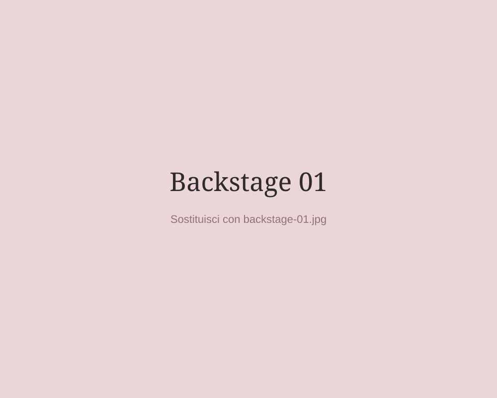
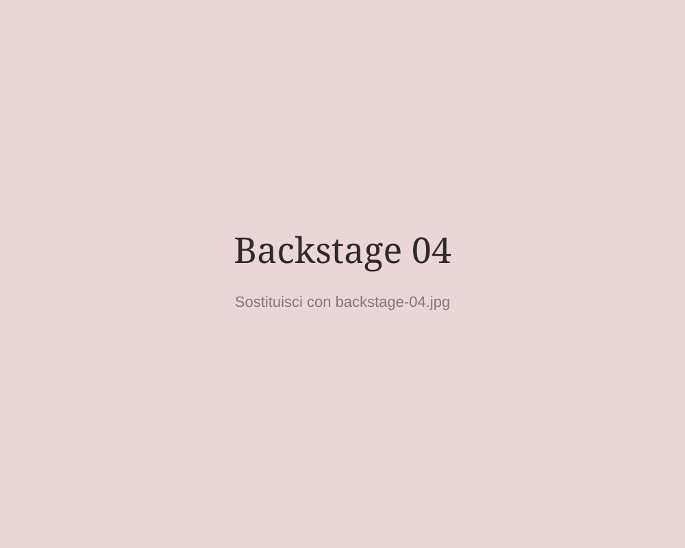

Sto iniziando
Voglio costruire basi corrette, acquisire sicurezza e imparare un metodo di lavoro chiaro fin dall'inizio.
Griffe nails academy • formazione professionale nails
Ogni professionista ha un punto di partenza diverso.
Per questo non voglio proporti un corso standard:
parto dal tuo livello, dal tuo modo di lavorare e dalle difficoltà che incontri, per costruire una formazione
davvero utile per te.

DA DOVE PARTI?
Trova la situazione che ti rappresenta di più.
Partiremo da ciò di cui hai davvero bisogno.
Voglio costruire basi corrette, acquisire sicurezza e imparare un metodo di lavoro chiaro fin dall'inizio.
Ho già esperienza, ma alcuni errori continuano a ripetersi. Voglio capire dove nascono e come correggerli.
Lavoro già con sicurezza, ma voglio aumentare precisione, qualità del risultato e controllo tecnico.
Voglio migliorare e uniformare lo standard tecnico del mio team con una formazione mirata.
IL METODO GRIFFE
La formazione GNA non si limita a mostrare come eseguire una tecnica. L'obiettivo è aiutarti a comprendere perché un lavoro funziona, dove nasce l'errore e come ottenere un risultato più preciso e consapevole.
La formazione può comprendere
Lavorare in modo più pulito, controllato e coerente con uno standard tecnico elevato.
Non solo eseguire una tecnica, ma comprenderne i passaggi che incidono davvero sul risultato finale.
Cura del dettaglio, preparazione, struttura e precisione: elementi centrali riconosciuti anche dalle corsiste GNA.
Il percorso viene adattato alle tue difficoltà, al tuo livello e agli obiettivi che vuoi raggiungere.
COME FUNZIONA
Pochi passaggi per permettere a Cristina di capire davvero cosa ti serve prima di proporti una formazione.
Raccontaci il tuo livello, le difficoltà che incontri e ciò che vuoi migliorare.
Dopo il test puoi proseguire su WhatsApp e, se utile, inviare alcune foto dei tuoi lavori.
Cristina valuta il tuo punto di partenza e definisce contenuti, durata e impostazione del percorso.
Ricevi tutte le informazioni necessarie e confermi la tua partecipazione.
Il percorso si svolge a Brescia, individualmente o in piccoli gruppi, con pratica e correzione diretta.
Il confronto non termina con la giornata formativa: è previsto supporto anche dopo il corso.
TEST DI ORIENTAMENTO
Qui verrà inserito il test di orientamento GNA.
Spazio riservato al questionario interattivo.
DENTRO GNA
Pratica, confronto e correzione diretta in un ambiente dedicato all'apprendimento.


FAQ
Le informazioni essenziali prima di iniziare il tuo percorso.
No. Il percorso viene costruito in base al livello di partenza. Il test serve a capire quale formazione può essere più adatta alle tue esigenze.
La formazione può essere individuale oppure svolgersi in piccoli gruppi, fino a un massimo di 3 corsiste.
La formazione in presenza si svolge a Brescia, presso Griffe Nails.
La durata dipende dal livello, dagli obiettivi e dalle esigenze formative. Può trattarsi di una singola giornata oppure di un percorso su più incontri.
I corsi vengono organizzati su richiesta, prevalentemente la domenica, in base alla disponibilità e al percorso concordato.
Il costo varia in base a durata, contenuti e livello di personalizzazione. Dopo il test e il confronto iniziale riceverai una proposta coerente con il percorso individuato.
Sì. Il test è consigliato perché permette di raccogliere prima alcune informazioni utili, ma puoi anche contattare direttamente Cristina su WhatsApp.
CONTATTI
Se preferisci parlarne direttamente, contatta Cristina e raccontale da dove parti.
Scrivi su WhatsAppSostituisci il link del pulsante con il link WhatsApp definitivo.